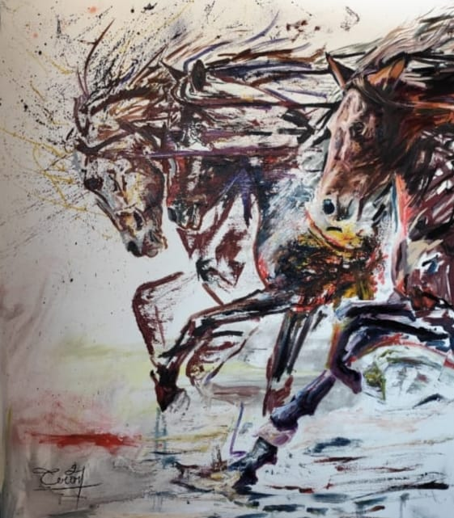

RESUMIDOW
Lo esencial no se pinta… se revela



Lo esencial no se pinta… se revela



Óleo sobre lienzo

Estudio de crines

Salto y poder
"La esencia de William trasciende la forma; su alma yace en la versatilidad y la expresión pura de su ser. Donde la pincelada se libera, el espíritu se revela."